Calibración Inteligente de Sensores Ambientales
Desarrollo de un modelo de Machine Learning para la corrección multivariable de señales de sensores electroquímicos, mejorando la precisión de redes de monitoreo.
Data Scientist
Modelamiento de Señales Avanzado · Airflux · CEDENNA
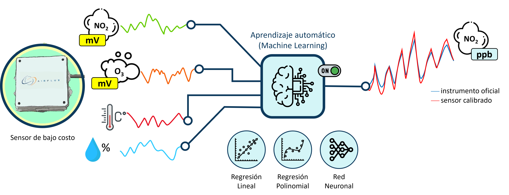
Contexto del Problema y Objetivos Técnicos
El monitoreo de la calidad del aire regulatorio en Chile depende de estaciones de referencia (SINCA) de alta fidelidad pero con costos críticos de implementación (~$245,000 USD por unidad), limitando la resolución espacial en zonas críticas urbanas e industriales. Los sensores electroquímicos de Airflux (~$754 USD) permiten densificar la red, pero sus señales crudas sufren de un sesgo inicial de hasta el 30% debido a factores ambientales y fenómenos físicos internos. La EPA (Environmental Protection Agency) sugiere alcanzar un porcentaje de sesgo menor al 20 % para poder utilizar los sensores como instrumentos complementarios.
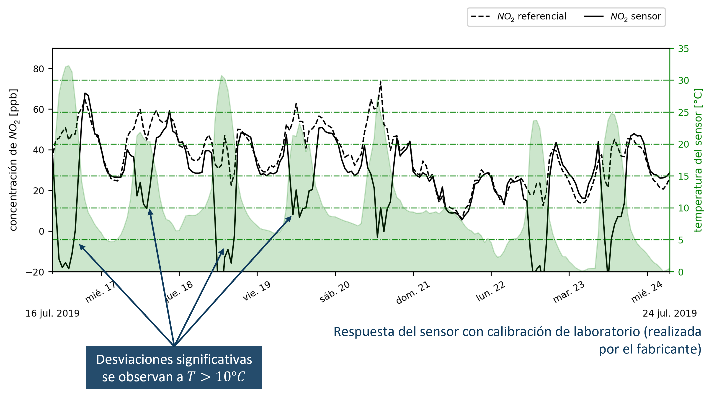
El objetivo de este desarrollo consiste en diseñar y validar un modelo de ML robusto que actúe como una capa de calibración matemática inteligente. El sistema procesa los voltajes de los electrodos de los sensores y realiza una compensación para remover el ruido térmico, la reactividad cruzada y la degradación temporal del hardware del sensor, logrando que la precisión de los sensores de bajo costo cumpla con los estándares de calidad establecidos por la EPA, específicamente alcanzar un sesgo menor al 20 %.
"El foco del proyecto radica en resolver matemáticamente las limitaciones del hardware mediante aprendizaje automático multivariable."
Identificación de los Fenómenos que Limitan la Precisión
Para modelar la corrección, fue crítico mapear matemáticamente el comportamiento de las señales en entornos geográficos reales: la campaña de NO2 en un entorno de alta densidad urbana (La Florida, Santiago) y la campaña de SO2 en una zona costera saturada (Quintero, Valparaíso). El análisis exploratorio reveló las tres principales interferencias físicas a resolver (tomando como ejemplo el NO2):
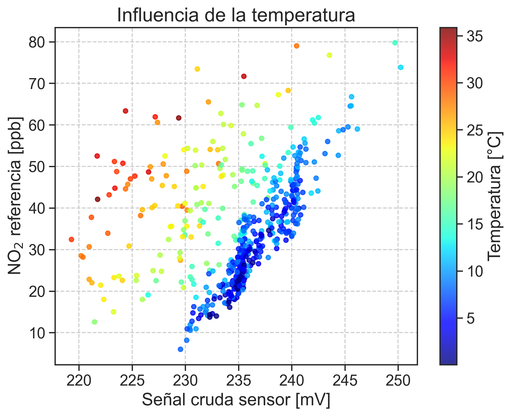
Ruido Térmico
La señal eléctrica por sí sola no basta. La temperatura modifica la relación entre voltaje y concentración.
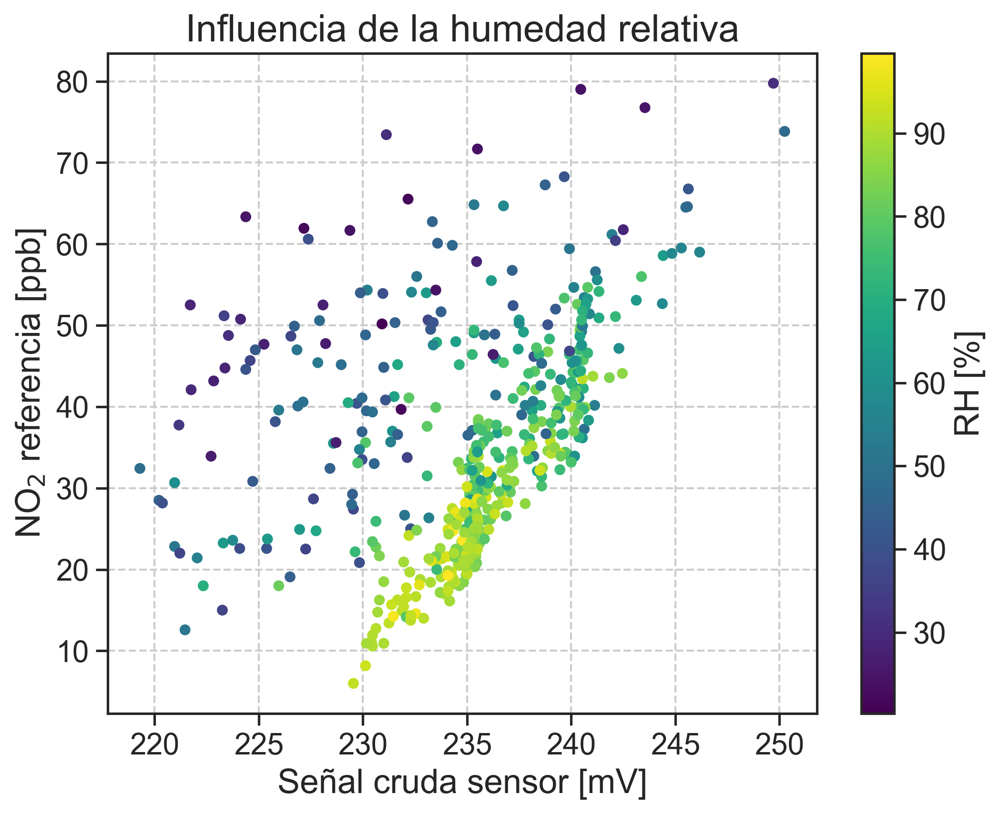
Humedad del Aire
La humedad altera las condiciones electroquímicas internas del sensor e introduce incertidumbre en la medición.
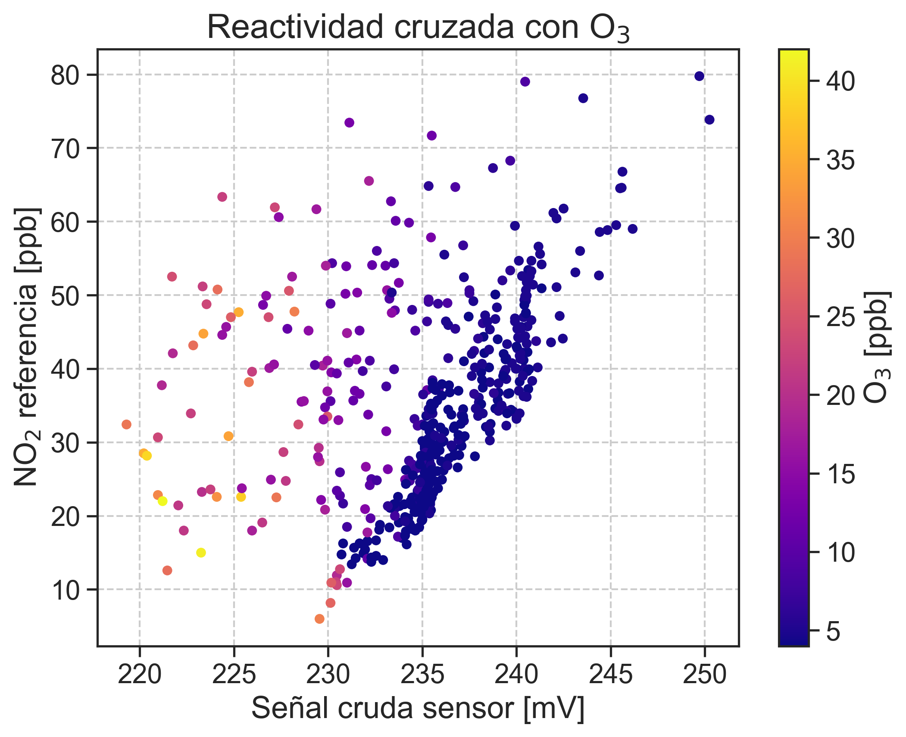
Reactividad Cruzada
La presencia de O3 modifica la señal y genera falsas contribuciones en la medición.
Formulación del Modelo de Calibración
La calibración inteligente propuesta consiste en transformar la señal cruda de voltaje proveniente de los electrodos del sensor en estimaciones de concentración de gas, compensando simultáneamente las limitaciones inherentes del hardware mediante la incorporación explícita de las variables interferentes identificadas anteriormente.
Desde una perspectiva matemática, el problema se formaliza como una función de transferencia multivariable no lineal que aproxima la relación entre el espacio de variables instrumentales-meteorológicas y la concentración real del contaminante:
$NO_2 = f_{\text{cal}}(S,\ T,\ RH,\ O_3)$
donde $S$ representa la señal cruda de voltaje del sensor, $T$ la temperatura ambiente, $RH$ la humedad relativa y $O_3$ la concentración de ozono, utilizada como variable de corrección por reactividad cruzada.
Flujo de Trabajo
La función de transferencia $f_{\text{cal}}$ fue aproximada mediante un conjunto de modelos con complejidad creciente, siguiendo el siguiente pipeline de entrenamiento y evaluación:
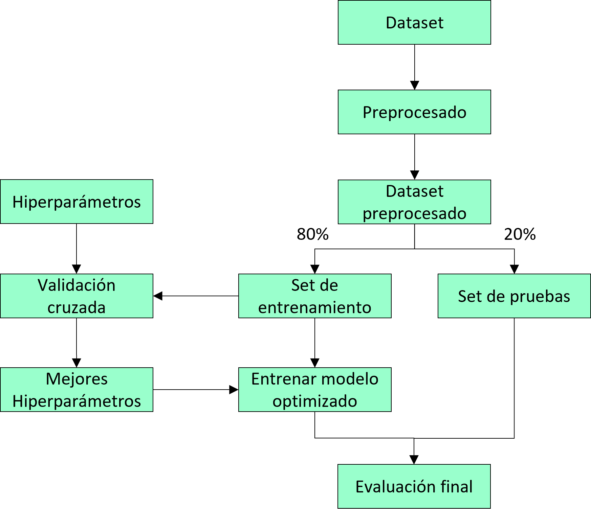
Modelos Evaluados
Cada modelo fue entrenado con el 80 % de los datos disponibles, reservando el 20 % restante para evaluación. Los tres algoritmos, obtenidos desde scikit-learn, se ordenan a continuación por complejidad creciente:
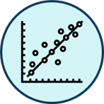
Regresión Lineal Multivariable
Modelo baseline que asume relaciones lineales entre las variables predictoras y la concentración de gas. Útil como referencia pero limitado ante no linealidades físicas.
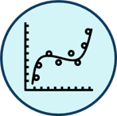
Regresión Polinomial
Extiende el modelo lineal incorporando términos cuadráticos e interacciones entre variables predictoras, capturando no linealidades moderadas del sistema.
Perceptrón Multicapa
Red neuronal artificial capaz de modelar interacciones complejas entre las variables predictoras y la concentración de gas.
Ejemplo de Implementación
from sklearn.linear_model import LinearRegression
from sklearn.preprocessing import PolynomialFeatures
from sklearn.pipeline import make_pipeline
from sklearn.neural_network import MLPRegressor
# MODELO 1: Regresión lineal
f_lineal = LinearRegression()
# MODELO 2: Regresión polinomial (grado 2)
f_polinomial = make_pipeline(PolynomialFeatures(degree=2), LinearRegression())
# MODELO 3: Red neuronal (MLP)
f_mlp = MLPRegressor()
# Entrenamiento — split 80/20 aplicado previamente
f_lineal.fit(X_train, y_train)
f_polinomial.fit(X_train, y_train)
f_mlp.fit(X_train, y_train)Resultados y Validación
En el siguiente video puede ver una animación del proceso de entrenamiento de una regresión lineal y cómo esta función de transferencia permite la convergencia de la respuesta del sensor a la respuesta del instrumento de referencia.
Este procedimiento se aplicó para los 3 modelos. A continuación puede ver las series de tiempo de la concentración de NO2 y sus respectivos porcentajes de sesgo.
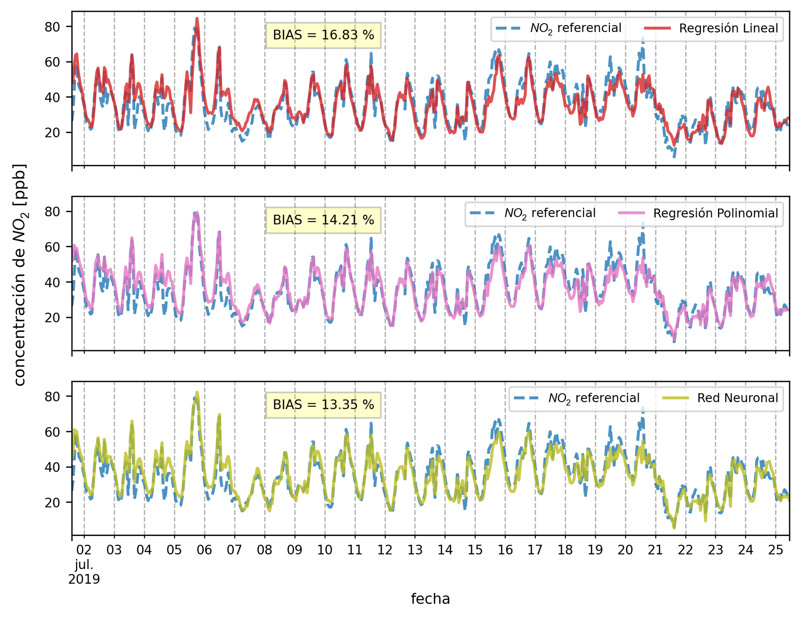
| Modelo Evaluado | RMSE (ppb) | R2 Score | Sesgo (BIAS) |
|---|---|---|---|
| Regresión Lineal Multivariable | 5.34 | 0.78 | 16.83 % |
| Regresión Polinomial (2° Orden) | 4.12 | 0.84 | 14.21 % |
| Red Neuronal Artificial (MLP 5x6) | 3.05 | 0.91 | 13.35 % |
Los resultados indican que la Red Neuronal Artificial MLP (5x6) es el modelo de mejor desempeño, alcanzando un R² de 0.91 y un sesgo del 13.35 %, cumpliendo con el criterio de rendimiento óptimo establecido por la EPA. Su capacidad para capturar las no linealidades físicas del sistema la posiciona como la función de calibración definitiva para el despliegue operativo de la red de sensores.
Análisis Temporal y Calibración de Dos Etapas
Uno de los aportes cruciales del estudio de datos consistió en evaluar cómo responde el modelo ante las ventanas de tiempo de entrenamiento, resolviendo dos preguntas operativas críticas:
Ventana Mínima de Co-localización
A través de experimentos de partición temporal decreciente, se determinó que el regresor neuronal requiere un mínimo de 12 días continuos de datos de entrenamiento junto a una estación de referencia patrón para estabilizar las matrices de pesos y garantizar que las predicciones futuras mantengan un sesgo menor al 20 %.
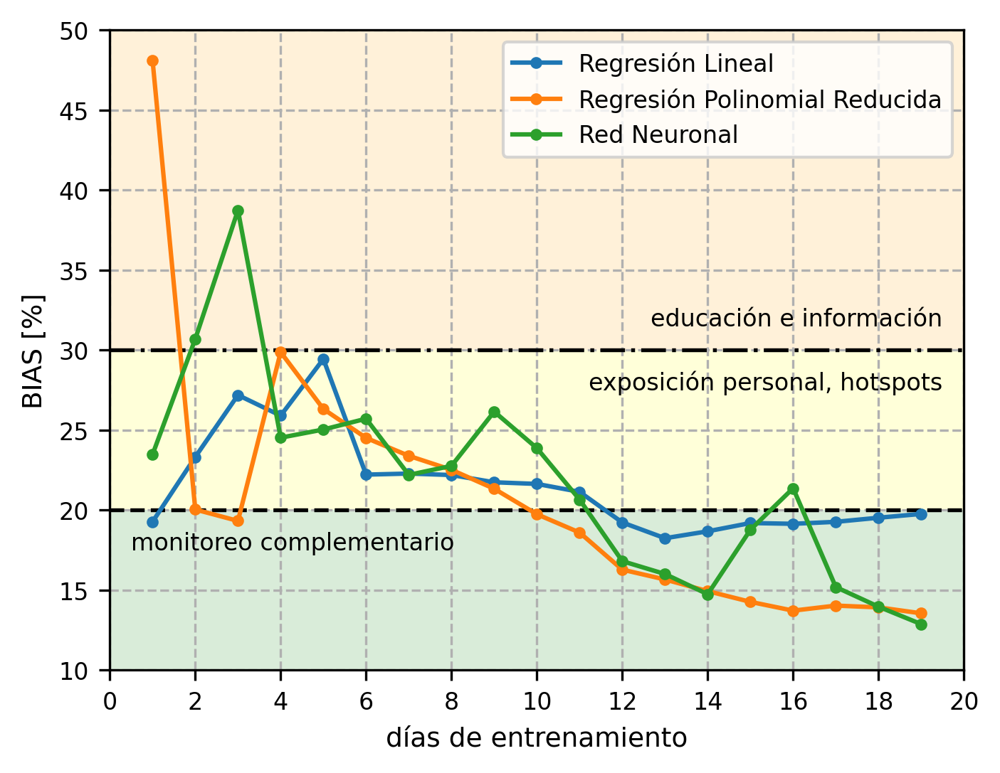
Compensación Dinámica de la Deriva
La celda electroquímica del sensor sufre un desgaste físico irreversible que se traduce en un sesgo creciente (deriva temporal). Para mitigar este desgaste sin necesidad de recalibrar físicamente en terreno, se integró una función de corrección ponderada en el tiempo que estabiliza el error acumulado a largo plazo con un sesgo del 10.86 %.
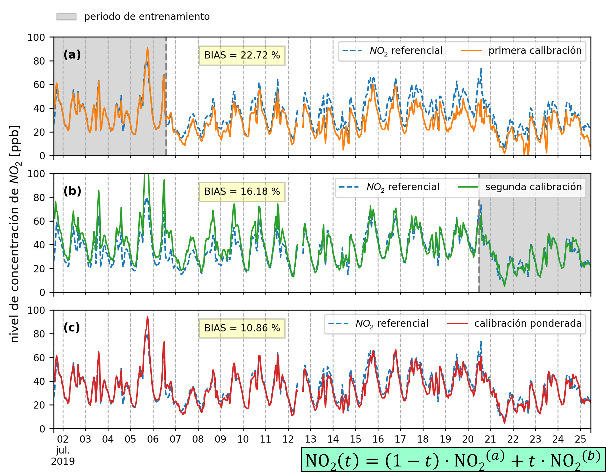
Insights Científicos y Conclusiones Analíticas
El análisis exploratorio avanzado y la inspección post-entrenamiento del modelo arrojaron los siguientes descubrimientos clave:
- Sensibilidad Térmica Dominante: La temperatura ambiente actúa como el principal interferente del sistema electroquímico, siendo la variable de mayor peso en las matrices del modelo neuronal entrenado.
- Transferibilidad del Modelo: Se probó con éxito la transferencia de pesos entre sensores distribuidos geográficamente, permitiendo que un sensor calibrado en un punto actúe como calibrador secundario de otro.
- Análisis Temporal: Se determinó que 12 días de entrenamiento (aproximadamente 2 semanas en modo co-localización) son suficientes para lograr convergencia estable. Adicionalmente, la calibración de dos etapas con corrección temporal reduce la deriva a largo plazo hasta un sesgo del 10.86 %.
- Cierre de Brecha Económica: La calibración inteligente reduce el sesgo de medición desde un 30 % hasta un 10 %, logrando una mejora de precisión del 20 % sobre hardware de bajísimo costo y habilitando la viabilidad técnica de redes densas de alta resolución espacial.
Galería del Proyecto
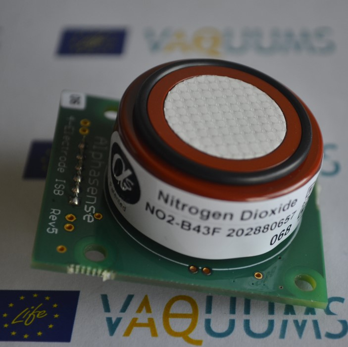


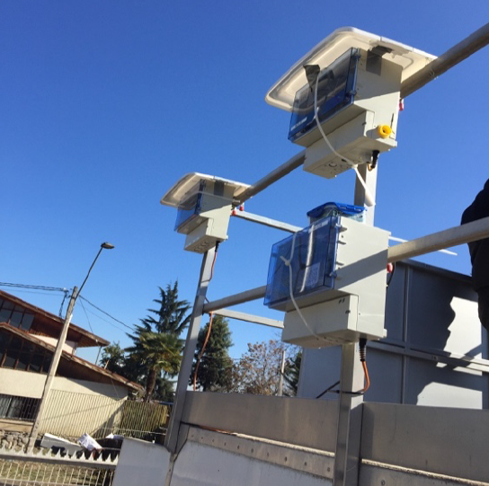
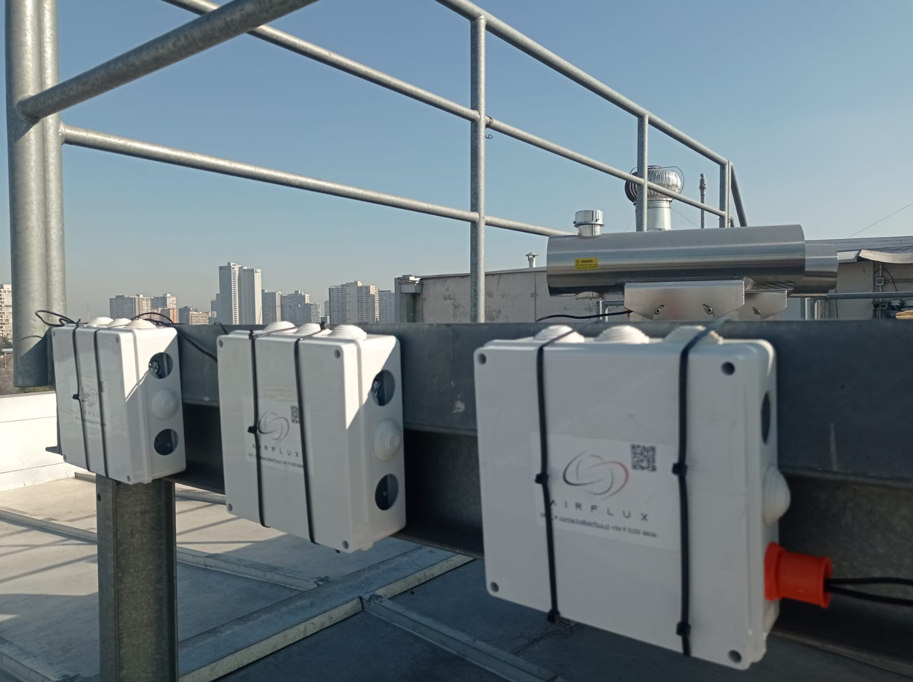
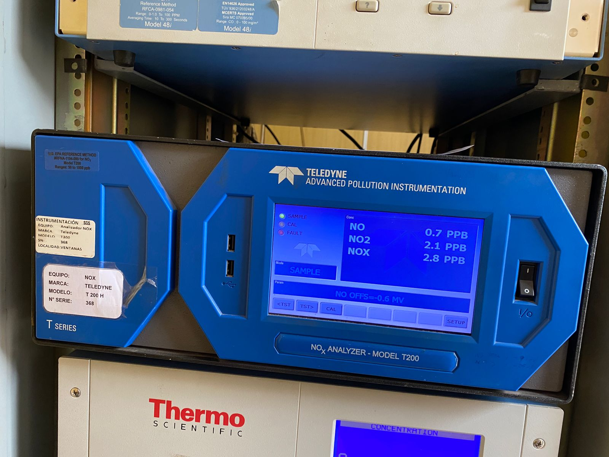
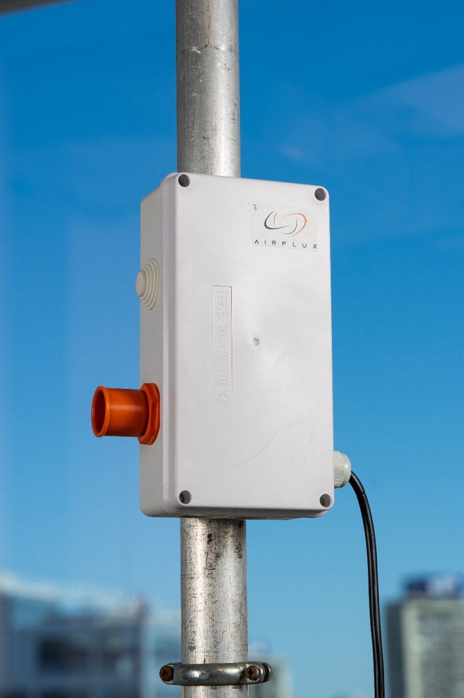
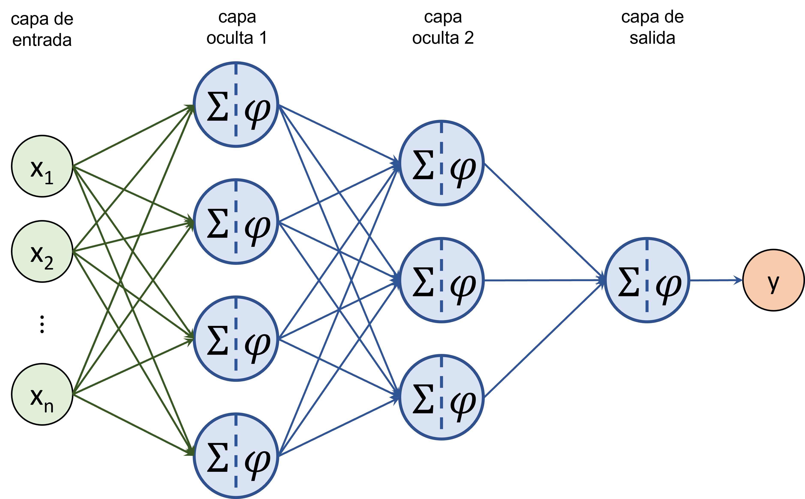
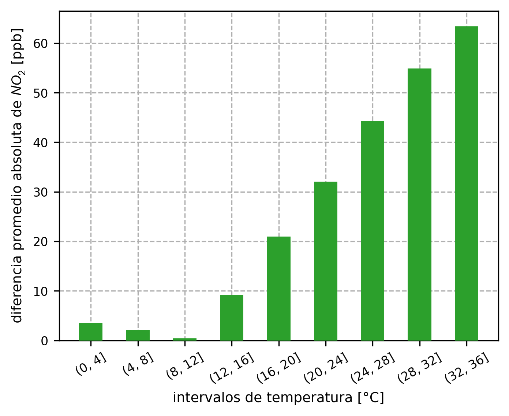

Stack Tecnológico de Ciencia de Datos
Todo el ecosistema de procesamiento de señales, análisis estadísticos, entrenamiento y validación de modelos de ML fue construido empleando herramientas robustas del ecosistema de Python:
- Python 3.10 & NumPy: Base del entorno de cómputo científico y manejo eficiente de álgebra matricial.
- Scikit-Learn: Framework principal utilizado para la construcción de pipelines de preprocesamiento, particionamiento de datos, escalamiento e instanciación de la arquitectura de Red Neuronal MLP, entrenamiento y validación.
- Pandas: Motor analítico de series de tiempo horarias, encargado de la limpieza y alineación estricta de las marcas temporales de los sensores remotos con las estaciones SINCA.
- Matplotlib & Seaborn: Módulos de visualización avanzados que permitieron estructurar los gráficos analíticos del EDA, matrices de correlación y curvas de ajuste de residuos.
- Ecosistema Industrial: Integración de flujos conceptuales validados con datos operativos reales de la empresa de monitoreo inteligente Airflux y con soporte del centro de investigación CEDENNA.